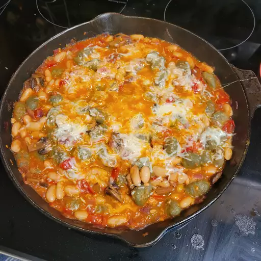

Home
Skillet Gnocchi with Chard and White Beans
In this one-skillet gnocchi with chard and white beans recipe, we toss dark leafy greens, diced tomatoes
and white beans with gnocchi and top it all with gooey mozzarella.

Ingredients
- 1 tablespoon extra-virgin olive oil
- 1 (16 ounce) package shelf-stable gnocchi
- 1 teaspoon extra-virgin olive oil
- 1 medium yellow onion, thinly sliced
- ½ cup water
- 4 cloves garlic, minced
- 6 cups chopped chard leaves or spinach
- 1 (15 ounce) can diced tomatoes with Italian seasonings
- 1 (15 ounce) can white beans, rinsed
- ¼ teaspoon freshly ground pepper
- ½ cup shredded part-skim mozzarella cheese
- ¼ cup finely shredded Parmesan cheese
Directions Step by Step
- Heat 1 tablespoon oil in a large nonstick skillet over medium heat. Add gnocchi; cook, stirring often, until plumped and starting to brown, 5 to 7 minutes. Transfer to a bowl.
- Heat remaining 1 teaspoon oil in the skillet. Add onion; cook and stir over medium heat for 2 minutes. Stir in water and garlic, cover, and cook until onion is soft, 4 to 6 minutes.
Add chard; cook and stir until starting to wilt, 1 to 2 minutes. Stir in tomatoes, beans, and black pepper; bring to a simmer. Stir in gnocchi; sprinkle with mozzarella cheese and Parmesan cheese.
Cover and cook until cheeses are melted and sauce is bubbling, about 3 minutes.
Cook's Note
Look for shelf-stable gnocchi near other pasta in the Italian section of most supermarkets.